Bản đồ là một bức họa theo tỷ lệ. Phản ảnh đầy đủ của một phần mặt đất, trên đó ghi rõ những đặc điểm thiên nhiên và nhân tạo như: Núi, rừng, sông, rạch, đường xá, đô thị, xóm làng, chùa chiền, nhà thờ... bằng những ước hiệu quốc tế, có hình thể và màu sắc khác nhau.
ƯỚC HIỆU ĐỊA HÌNH
Các cảnh vật ngoài địa thế như sông, suối, phố xá, nhà ở, đường sắt, đường bộ... Đều được ghi lại trên bản đồ không phải bằng những hình ảnh mà bằng ước hiệu. Ước hiệu không vẽ theo tỷ lệ, nhưng tôn trọng chiều hướng và vị trí.
Tất cả bản đồ quân sự đều có bản ghi chú ước hiệu ở phía dưới, nếu sử dụng nhiều, chúng ta sẽ quen.
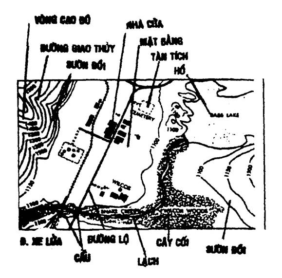
Có 5 loại ước hiệu:
1. Đường giao thông: Đường sắt, đường nhựa, đường đất, đường mòn.
2. Thuỷ lộ: Sông, suối, mương, kênh....
3. Thảo mộc: Rừng rậm, rừng thưa, đồn điền...
4. Kiến trúc: Nhà cửa, phố xá, làng mạc, thành luỹ, tàn tích, phi trường…
5. Linh tinh: Địa giới, vòng cao độ…
MÀU SẮC CỦA ƯỚC HIỆU
1. Màu đỏ: Chỉ xa lộ, đường nhựa, phố thị…
2. Màu xanh lam: Chỉ dòng nước hay những gì thuộc về nước (sông, suối, biển…)
3. Màu xanh lục - (đậm hay nhạt): Chỉ thảo mộc, cánh rừng.
4. Màu đen: Chỉ làng mạc, nhà cửa, công trình kiến trúc.
5. Màu nâu: Chỉ vòng cao độ, thế đất …
TỶ LỆ XÍCH
Tỷ lệ bản đồ là tỷ số giữa khoảng cách hai điểm đo được trên bản đồ so với khoảng cách thực sự ở ngoài địa thế.
Tỷ lệ = Khoảng cách 2 điểm trên bản đồ/Khoảng cách 2 điểm ngoài địa thế
Thí dụ: Một đoạn đường từ A đến B dài 500 mét. Các bạn chỉ vẽ trên bản đồ dài 20mm. Vậy các bạn đã vẽ con đường AB theo tỷ lệ là 20/500.000 hay là 1/25.000.
Có hai loại tỷ lệ: Tỷ lệ số và Tỷ lệ hoạ.
1. Tỷ lệ số: Là tỷ lệ được viết bằng phân số, tử số luôn luôn là số một (1) và mẫu số là số chẳn.
Thí dụ: 1/50.000
Tỷ lệ 1/50.000 có nghĩa là một ly (mm) trên bản đồ thì bằng 50.000 ly (mm) ở ngoài địa thế.
- Tính khoảng cách trên bản đồ.
Ta gọi:
T = Tỷ lệ của bản đồ
K = Khoảng cách ngoài địa thế
k = Khoảng cách trên bản đồ
Chúng ta có công thức:
k = K/T
Thí dụ: Chúng ta biết khoảng cách (K) ở ngoài địa thế là 3.500 mét ( tức 3.500.000mm). Nếu dùng bản đồ tỷ lệ 1/25.000 ta có:
K = 350.000mm = 140mm. Vậy k = 140mm
T = 25.000
Như vậy: muốn tìm khoảng cách (k) trên bản đồ, chúng ta lấy khoảng cách (K) ngoài địa thế, chia cho tỷ lệ bản đồ (T).
- Tính khoảng cách ngoài địa thế:
Chúng ta dùng công thức:
K = k x T
Thí dụ: Chúng ta biết khoảng cách trên bản đồ là 140mm. Nếu dùng bản đồ tỷ lệ 1/25.000 chúng ta có:
(k) = 140mm x (T) = 25.000 => (K) = 3.500.000 mm.
Vậy K = 3.500.000 mm hay 3.500 mét.
Như vậy: Muốn tìm khoảng cách (K) ngoài địa thế, ta lấy khoảng cách (k) trên bản đồ nhân với tỷ lệ (T).
TỶ LỆ HOẠ.
Tỷ lệ hoạ là một hình vẽ giống như cái thước, in sẵn trên bản đồ, giúp ta suy ra khoảng cách trên bản đồ thành khoảng cách ngoài địa thế, mà không cần áp dụng công thức tỷ lệ số.
Tỷ lệ họa có thể ghi bằng thước Tây (metre) hoặc bằng dặm Anh (mile=1,609) hoặc bằng Mã (yard=0,9144).
Chúng ta thường dùng thước Tây để làm đơn vị đo đạc trong tỷ lệ họa.
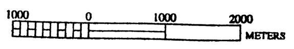
Khi sử dụng, chúng ta lấy số không (0) làm chuẩn, bên phải thước, chúng ta thấy ghi 1000m, 2000m… Có nghĩa là một khoảng cách như thế trên bản đồ thì bằng 1000 hoặc 2000 mét ở ngoài địa thế. Bên trái có ghi 1000m chia làm 10 phần, như vậy mỗi phần tương ứng với 100m ngoài địa thế.
CÁC HƯỚNG BẮC
Có 3 hướng Bắc:
1. Hướng Bắc Từ
2. Hướng Bắc Địa Dư
3. Hướng Bắc Ô vuông
1. Hướng Bắc Từ (Magnetic North)
Là hướng Bắc của kim nam châm địa bàn. Kim địa bàn thì nằm theo trục từ trường Bắc Nam của trái đất mà không nằm theo kinh tuyến của địa dư.
Đỉnh Bắc Từ (Magnetic North = MaN) cũng không nằm trên đỉnh điểm của Bắc Địa Dư (tức trục trái đất), mà nằm trên vùng đảo Bathurst, phía Bắc Canada. Hướng Bắc Từ có thể thay đổi từ 30° Tây ở Alaska đến 50° Đông ở Greenland. Nhưng nó không chênh lệch trên Đồng Giác Tuyến (Agonic Line), vì đỉnh điểm của Bắc Từ và đỉnh điểm của Bắc Địa Dư đều nằm trên tuyến nầy.
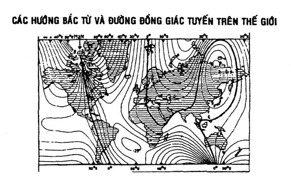
SỰ CHÊNH LỆCH CỦA BẮC TỪ VÀ BẮC ĐỊA DƯ
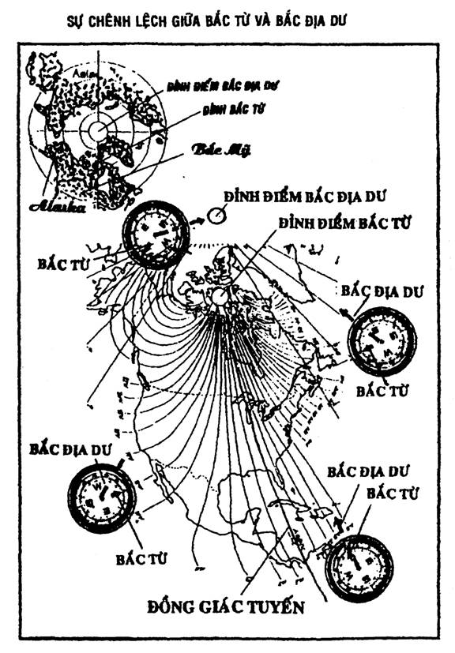
Hướng Bắc Từ thay đổi theo thời gian. Trên bản đồ, hướng Bắc nầy được tượng trưng bằng một đường thẳng, đầu có mũi tên 1 ngạnh.
2. Hướng Bắc Địa Dư (True North)
Là hướng Bắc của trái đất, xác định bởi những kinh tuyến Nam Bắc Cực. Hướng Bắc Địa Dư được tượng trưng bằng một đường thẳng, trên có hình sao 5 cánh.
3. Hướng Bắc Ô Vuông (Grid North)
Còn gọi là Hướng Bắc bản đồ, vì nó chỉ có trên bản đồ, theo phép chiếu U.T.M. (Universal Transverse Mercator). Hướng Bắc Ô Vuông được xác định bởi các trục Tung Độ của lưới ô vuông trong bản đồ. Hướng Bắc nầy được tượng trưng bằng một đường thẳng, phía trên có hai mẫu tự GN hay Y.
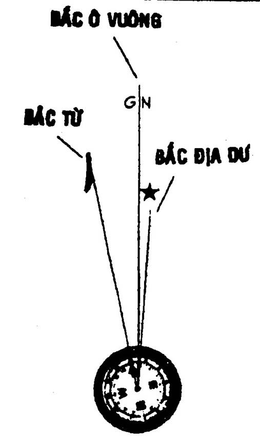
ĐỘ TỪ THIÊN.
Độ Từ Thiên là sự xê dịch của hướng Bắc Từ. Hướng Bắc Từ xê dịch hàng năm trong giới hạn 23°30’ Đông và 23°30’ Tây. Sự chuyển dịch nầy rất chậm, mỗi năm chỉ có 2 phút (2’). Cho nên để tròn một chu kỳ chuyển dịch, phải mất từ 7 đến 8 thế kỷ.
Nếu Hướng Bắc Từ nằm ở bên phải của Hướng Bắc Ô Vuông ta gọi nó là «Tiểu Độ Từ Thiên Đông».
Nếu Hướng Bắc Từ nằm ở bên trái của Hướng Bắc Ô Vuông, ta gọi nó là «Tiểu Độ Từ Thiên Tây»
Cách tính Tiểu Độ Từ Thiên.
Muốn tính Tiểu Độ Từ Thiên, chúng ta phải có 3 yếu tố.
1. Năm in bản đồ và năm sử dụng.
2. Trị số Độ Từ Thiên, năm in.
3. Độ Từ Thiên dịch sang Đông hay Tây.
Thí dụ:
1. Năm in bản đồ 1955 – Năm sử dụng 1955.
2. Trị số Từ Thiên năm in = 1° Đông.
3. Tiểu Độ Từ Thiên dịch sang Đông.
Vậy số năm chênh lệch giữa năm in và năm sử dụng là:
1995 – 1955 = 40 năm.
Trị số Độ Thiên Từ của 40 năm là:
40’ x 2’ (là độ xê dịch của 1 năm ) = 80’ hay 1°20’.
Vậy: Tiểu Độ Từ Thiên của năm 1995 là:
1° + 1°20’ - 2°20’ Đông.
Công dụng: Tiểu Độ Từ Thiên được sử dụng để tính toạ độ cho thật chính xác.
HỆ THỐNG CHIẾU TRÊN BẢN ĐỒ
Trái đất là một hình cầu, nhưng để vẽ bản đồ, người ta phải chiếu những hình thể của trái đất vào một hình trụ và hình nón, theo một phương pháp nhất định, để khi trải ra, sẽ có những mặt phẳng.
Có hai phương pháp chiếu thông dụng.
1. Phương pháp chiếu U.T.M. (Universal Transverse Mercator).
Phép chiếu U.T.M. được áp dụng cho những vùng từ 80° Bắc vĩ tuyến cho đến 80° Nam vĩ tuyến.
Trái đất được chiếu lên hình ống có trục thẳng đứng song song với trục trái đất. Sự bất lợi của phương pháp nầy là sự lớn dần về phía hai cực.
Thí dụ: Trên một bản đồ UTM. Vùng đất Greenland trông có vẻ lớn hơn Nam Mỹ, trong khi thật sự, vùng Nam Mỹ lớn hơn vùng Greenland gấp 9 lần.
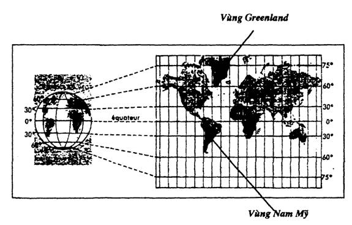
HỆ THỐNG Ô VUÔNG U.T.M.
Từ vĩ độ 80° Nam đến 80° Bắc, trái đất được chia thành 60 múi (theo chiều dọc) và 20 dải (theo chiều ngang).
a) Múi: Múi rộng 6° hay 666km, theo kinh độ, được đánh số từ 1 đến 60, bắt đầu từ kinh tuyến 180° đi về Đông.
b) Dải: Dải rộng 8° hay 888km, vĩ độ, được đặt tên bằng một mẫu tự theo thứ tự từ Nam đến Bắc, bắt đầu từ C đến X (bỏ các mẫu tự A, B, I, O, Y.)
Múi và Dải cắt nhau thành những vùng lưới ô vuông mang tên bằng số và mẫu tự.
- Số là tên của múi.
- Mẫu tự là tên của dải.
Thí dụ: Nước Việt Nam nằm trong những lưới ô vuông mang chữ số: 47Q – 48R – 48Q – 49Q – 48P – 49P.
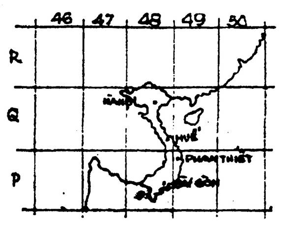
Trong hình bên, các bạn thấy Sài Gòn nằm ở lưới 48P – Huế là 48Q – Phan Thiết 49P…
Mỗi ô vuông của hình bên có chiều ngang là 6° hay 666km, chiều dọc là 8° hay 888km.
Ô VUÔNG CẠNH 100 CÂY SỐ (KM).
Mỗi vùng lưới ô vuông (múi và dãi) lại được chia thành nhiều ô vuông, mỗi cạnh 100 cây số.
Chiều ngang và chiều dọc của các ô vuông nầy được mang tên bằng một mẫu tự.
Mỗi ô vuông 100 cây số cạnh, đều mang hai mẫu tự, một mẫu tự chiều dọc, và một mẫu tự chiều ngang. Khi viết, các bạn viết chiều dọc (nằm bên trái) trước, chiều ngang (nằm phía dưới) sau.
Thí dụ:
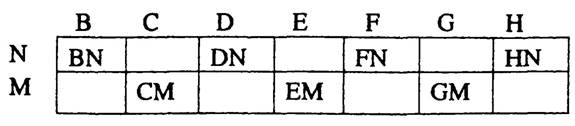
Ô VUÔNG CẠNH 1 CÂY SỐ (KM)
Là ô vuông nhỏ nhất trong các bản đồ có tỷ lệ 1/12.500. 1/25.000 – 1/50.000 – 1/100.000. Được tạo nên bởi những đường thẳng song song với kinh tuyến và vĩ tuyến. Đây cũng là những trục «Tung độ» và «Hoành độ» mà chúng ta dùng để tìm toạ độ chính xác trên bảng đồ.
TOẠ ĐỘ
Toạ độ là một điểm trên bản đồ, được định vị bởi một dãy số của Tung độ và Hoành độ mà điểm đó trực thuộc.
Muốn tìm một toạ độ (X) trên bản đồ. Chúng ta chia trục Tung độ và Hoành độ (của ô vuông cạnh 1 cây số, trong đó có toạ độ muốn tìm) mỗi trục làm 10 phần bằng nhau.
1. Ta đọc chỉ số của đường Tung độ nằm bên trái của điểm toạ độ muốn tìm.
2. Tính xem điểm toạ độ chiếm bao nhiêu phần 10 của ô vuông, tính từ trái qua phải.
Thí dụ: Đường Tung độ mang số 63, và điểm toạ độ muốn tìm chiếm 7/10 ô vuông. Ta đọc 673. Đây là chòm số đầu.
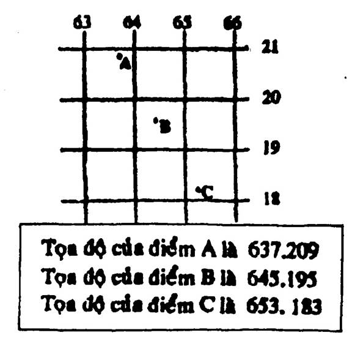
3. Tiếp theo ta đọc chỉ số của đường Hoành độ nằm phía dưới của điểm toạ độ muốn tìm.
4. Tính xem điểm toạ độ chiếm bao nhiêu phần 10 của ô vuông, tính từ dưới lên.
Thí dụ: Đường Hoành độ mang số 25 và điểm toạ độ muốn tìm chiếm 4/10 của ô vuông. Ta đọc là 254. Đây là chòm số sau.
Như vậy: Toạ độ X trên bản đồ là 637.254.
Ghi chú: Lúc nào chúng ta cũng phải đọc chỉ số của Tung độ trước và chỉ số của trục Hoành độ sau.
Toạ độ UTM đầy đủ.
Toạ độ 6 số trên, chỉ cho chúng ta biết vị trí của nó trên một ô vuông. Muốn có một toạ độ đầy đủ để cho chúng ta biết vị trí đó nằm ở đâu trên trái đất, chúng ta phải có những yếu tố sau:
1. Ký hiệu vùng lưới ô vuông (múi và dãi) tđ: 48P…
2. Ký hiệu ô vuông 100 cây số cạnh. Tđ: YS – CP…
3. Chỉ số Tung độ và Hoành độ của ô vuông 1 cây số.
4. Chỉ số phần 10 của toạ độ trong ô vuông 1 cây số.
Thí dụ: Một toạ độ đầy đủ
48P – YS – 637.254.
Toạ độ UTM đơn giản
Toạ độ UTM đơn giản là toạ độ gồm có:
1. Ký hiệu của ô vuông 100 cây số cạnh.
2. Chỉ số Tung độ và Hoành độ của ô vuông 1 cây số.
3. Chỉ số của phần 10 toạ độ nằm trong ô vuông 1 cây số.
Thí dụ: YS. 637254.
Ghi chú:
Trên bản đồ người ta có ghi rõ ký hiệu của vùng lưới ô vuông (múi và dãi), ký hiệu của ô vuông 100 cây số, kèm theo lời chỉ dẫn cách viết toạ độ UTM đầy đủ.
CÁC HÌNH THỨC TOẠ ĐỘ
Có 4 loại toạ độ.
1. Loại 4 số (toạ độ Ki-lô-mét = 1000 mét)
2. Loại 6 số (toạ độ có khoảng cách 100 mét)
3. Loại 8 số (toạ độ có khoảng cách 10 mét)
4. Loại 10 số (toạ độ có khoảng cách 1 mét)
Loại số 4 thì quá tổng quát, không chính xác, nên người ta thường dùng loại 6 số như đã đề cập ở trên. Còn loại 8 số hoặc 10 số rất ít chính xác, thì người ta cần dùng đến thước «chỉ định điểm».
THƯỚC CHỈ ĐỊNH ĐIỂM
Là một cái thước hình chữ L ngược, trên đó có ghi số đo củea 4 loại tỷ lệ 1/150.000 – 1/100.000 – 1/50.000 và 1/25.000 để sử dụng tương ứng với loại bản đồ mà chúng ta có. Muốn sử dụng thước «chỉ định điểm», trước hết, chúng ta tìm ô vuông có chứa toạ độ muốn tìm.
- Đặt thước «chỉ định điểm» để cạnh dưới của thước trùng lên trục Hoành độ dưới cửa ô vuông.
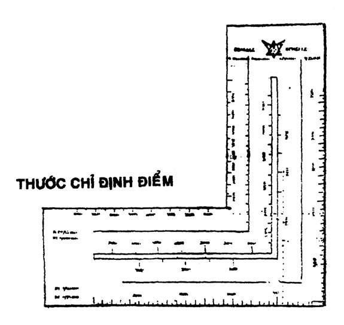
- Xê dịch thước «chỉ định điểm» theo cạnh dưới của đường Hoành độ cho đến khi điểm toạ độ nằm ngay trên cạnh thẳng đứng của thước thì ngừng lại.
- Đọc chỉ số ta thấy trên thước định điểm.
Thước «chỉ định điểm» cho chúng ta toạ độ chính xác đến từng mét (tức toạ độ 10 số).
VÒNG CAO ĐỘ
Cao độ của một điểm là chiều cao của điểm đó so với mực nước biển trung bình (giữa thuỷ triều lên và thuỷ triều xuống)
Vòng cao độ là đường vẽ trên bản đồ nối liền những điểm có độ cao bằng nhau, trên vòng đó, người ta ghi những con số chỉ độ cao mà nó mang.
Các vòng cao độ:
Có 4 loại vòng cao độ.
1. Vòng cao độ chính: Được in đậm nét và thường có mang những số ghi độ cao chính.
2. Vòng cao độ phụ: Là những vòng được vẽ giữa hai vòng cao độ chính, nét nhỏ hơn, thường không mang số.
3. Vòng cao độ bổ túc: Là những vòng cao độ được vẽ bằng những nét gián đoạn, để chỉ những độ cao chưa được xác định chính xác.
4. Vòng cao độ trũng: Có những gạch ngắn hình răng lược và được đánh số nhỏ dần từ ngoài vào trong. Đây là những thế đất trũng như hố, miệng núi lửa…
NHỮNG ĐƯỜNG BIỂU HIỆN VỀ VÒNG CAO ĐỘ
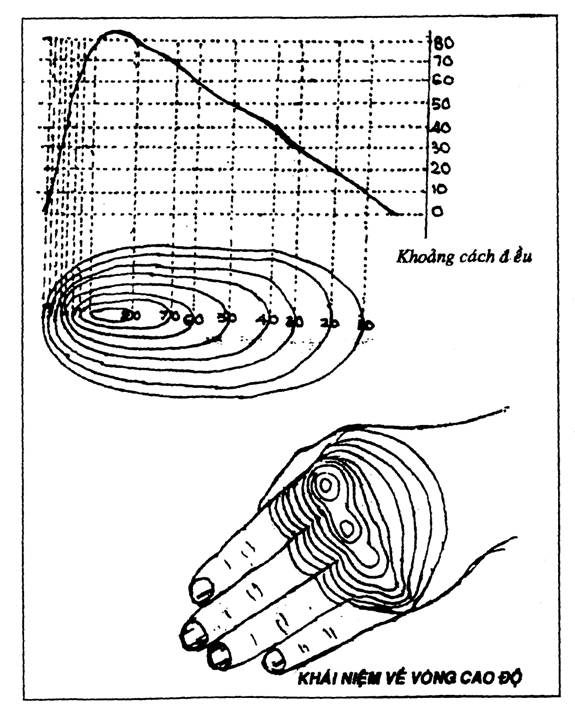
TƯƠNG QUAN GIỮA ĐỊA THẾ VÀ VÒNG CAO ĐỘ
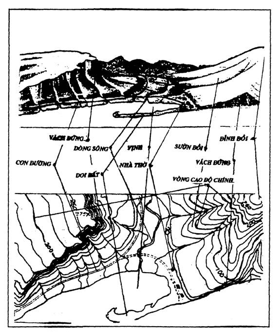
ĐỒI: Nếu đồi có độ dốc đều nhau thì khoảng cách vòng cao độ cũng đều nhau.
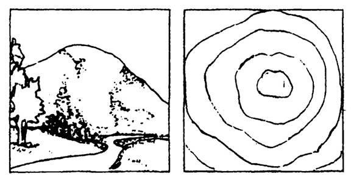
VÁCH ĐỨNG: Nếu địa thế là một vách đứng thì chúng ta thấy những vòng cao độ chồng khít lên nhau.
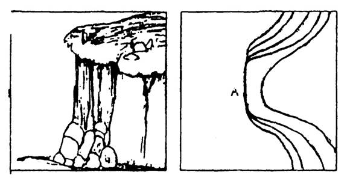
VÙNG TRŨNG - (BỒN ĐỊA): Nếu là một vùng đất trũng (người ta còn gọi là «bồn địa»), thì những vòng cao độ có hình răng lược.
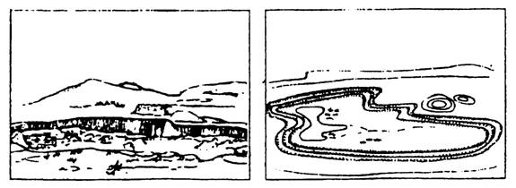
ĐỊNH HƯỚNG BẢN ĐỒ
Định hướng bảnđồ là làm thế nào để đặt trùng các phương hướng trên bản đồ với các phương hướng ở ngoài địa thế.
Có nhiều cách định hướng bản đồ.
1. Bằng địa bàn thường:
Đặt địa bàn lên bản đồ. Xoay bản đồ sao cho kim địa bàn nằm song song với trục Tung độ của bản đồ.
2. Bằng địa bàn quân sự:
Đặt cạnh trái của địa bàn (phần có thước đo) lên trùng với trục Tung độ của bản đồ và giữ cho địa bàn không xê dịch. Xoay bản đồ cho đến khi kim từ tính (có hình tam giác ở đầu) song song với hướng Bắc từ ghi chú trên bản đồ.
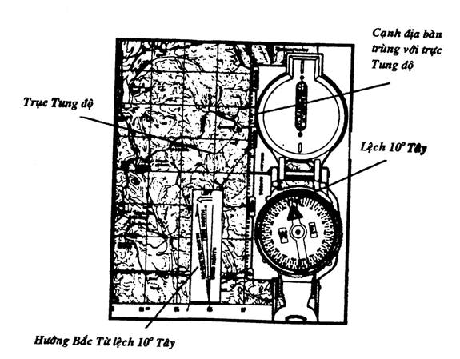
3. Bằng chi tiết địa thế:
Đây là trường hợp các bạn không có bản đồ trong tay. Căn cứ vào hướng của những chi tiết ngoài địa thế như con đường, dòng sông, đồi núi, công trình kiến trúc… hoặc các hướng mặt trời, trăng sao….để xác định phương hướng mà đặt bản đồ cho ph2u hợp với chi tiết trên đó.
Thí dụ: Chúng ta có vị trí là 1 là đỉnh một ngọn đòi. Vị trí 2 là chân của một ngọn núi. Các bạn xoay bản đồ làm sao cho hướng chi tiết trên bản đồ trùng hướng với chi tiết ngoài địa thế.
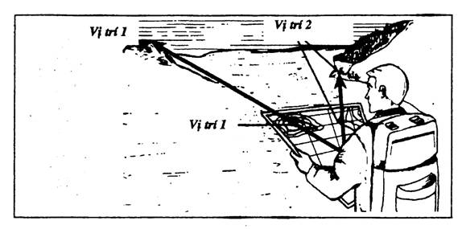
XÁC ĐỊNH ĐIỂM ĐỨNG
Là làm thế nào để biết chúng ta đang đứng ở đâu trên bản đồ. Hay là xác định một điểm trên bản đồ tương ứng với một điểm ngoài địa thế.
Có nhiều phương pháp để xác định điểm đứng nhưng những phương pháp sau đây là đơn giản và dễ dàng.
1. Đứng tại điểm chuẩn của địa thế:
Tìm và đứng ngay vào một điểm chuẩn đặc biệt của địa hình mà các bạn có thể tìm thấy dễ dàng trên bản đồ như: ngã ba đường, cầu, đỉnh chùa … tức là đã xác nhận được điểm đứng của mình.
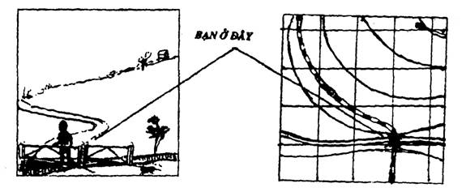
2. Phương pháp ước lượng khoảng cách
Tìm một điểm chuẩn đặc biệt ngoài địa thế mà có thể tìm thấy trên bản đồ (như Hình 1). Ước lượng xem khoảng cách từ điểm chuẩn đó cách ta là bao nhiêu. Tính tỷ lệ, ta có điểm đứng trên bản đồ.
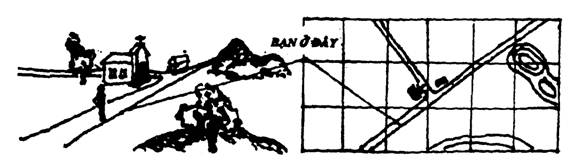
3. Phương pháp cắt đoạn con đường
Bạn đứng trên một con đường và cố gắng tìm một điểm chuẩn dễ nhận thấy ngoài địa thế cũng như trong bản đồ. Dùng địa bàn đo phương giác từ chỗ bạn đứng đến điểm chuẩn đó. Sau khi đã định hướng bản đồ, bạn kéo một đường thẳng theo phương giác đó, cắt ngang điểm chuẩn và con đường. Giao điểm của con đường và phương giác đó là điểm đứng của bạn.
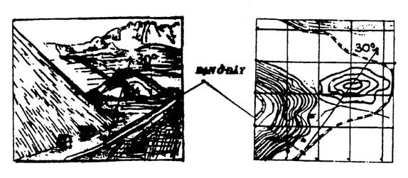
4. Phương pháp giao phóng.
Dùng phương pháp nầy, các bạn phải căn cứ ít nhất vào hai điểm chuẩn của địa thế, các bạn lần lượt làm theo tiến trình sau.
- Định hướng bản đồ
- Dùng địa bàn đo phương giác từng điểm chuẩn của địa thế.
- Đặt địa bàn lên bản đồ, xoay địa bàn đúng phương giác vừa tìm thấy.
- Vẽ một đường thẳng theo phương giác đó, cắt ngang điểm chuẩn thứ nhất.
- Làm như thế với điểm chuẩn thứ hai.
- Hai phương giác đó sẽ cắt nhau tại một điểm trên bản đồ, giao điểm đó là đìểm đứng của bạn.
Ghi chú:
Muốn chính xác hơn, các bạn tìm một điểm chuẩn thứ ba, nếu phương giác của điểm chuẩn nầy đi qua giao điểm của hai phương giác trên là chính xác. Nếu tạo thành một tam giác mỗi cạnh không quá 2mm, thì trung tâm của tam giác đó là điểm đứng.
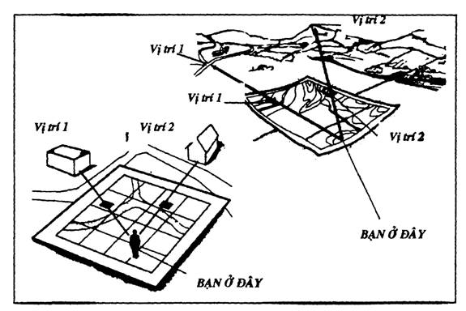
CHẾ TẠO MỘT ĐỊA BÀN
Khi các bạn ở những nơi xa lạ mà trong tay không có địa bàn, nếu có một ít vật dụng trong tay, các bạn có thể chế tạo một cái địa bàn đơn giản như sau.
Trước tiên, các bạn cần tạo ra một cái kim hay một miếng thép mang từ tính (xin lưu ý: phải là thép thì mới nhiễm từ tính, còn sắt hay các kim loại khác thì không nhiễm từ).
Để làm kim hay miếng thép nhiễm từ, các bạn làm theo một trong những phương pháp sau:
a. Chọn một cái kim hay một miếng thép có hình thù thích hợp rồi dùng một thỏi nam châm chà sát theo một chiều (không chà tới chà lui) một lúc sau, cái kim hay miếng thép đó sẽ nhiễm từ tính. Nếu không có nam châm, các bạn có thể dùng cái tua-vít (tourne-vis), dao bỏ túi đa năng… những vật dụng nầy thường mang sẵn một từ tính nhẹ.
b. Lấy một sợi dây điện (còn vỏ cách điện) cuộn thành một cái lò xo chung quanh một cái kim cho gọn và đều. Tuốt vỏ hai đầu dây, và nối với hai đầu một cục pin trong vòng vài phút, kim sẽ mang từ tính.
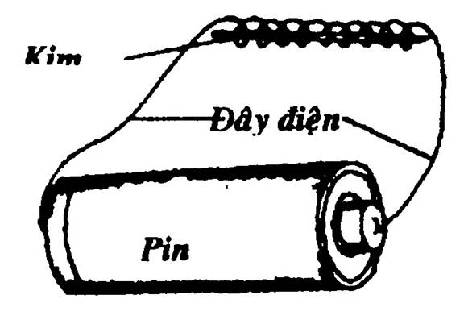
c. Dùng một lưỡi lam cũ hay một miếng thép mỏng rồi cẩn thận chà xát một chiều trên bàn tay hay trên tóc, lưỡi lam hay miếng thép sẽ nhiễm từ tính nhẹ.
Khi các bạn đã có một cái kim hay miếng thép mang từ tính rồi, thì mọi việc sẽ trở nên đơn giản hơn.
- Các bạn gắn cái kim đã nhiễm từ tính vào một vật nổi nhỏ như: miếng bấc, lá khô, gỗ nhẹ… rồi thả nổi trên mặt nước. Hai đầu kim sẽ tự động xoay về hướng Nam Bắc.
- Các bạn có thể thả nổi một cái kim nhiễm từ tính đã dính dầu (bằng cách cọ vào sống mũi hay chà lên tóc) rồi thả một cách nhẹ nhàng lên mặt nước, kim sẽ tự nổi mà không cần vật đỡ.
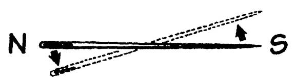
- Treo lơ lửng miếng thép hay lưỡi lam cũ đã nhiễm từ trên một sợi tơ tằm, tơ nhện hay các loại dây không bị vặn xoắn (vì sẽ làm cho vật bị treo quay vòng vòng). Sau một hồi chao đảo lắc lư, miếng thép sẽ ổn định và cho chúng ta hướng Nam Bắc. (Nếu trời có gió, các bạn có thể thả miếng thép vào trong một cái chai, ly hay một vật che chắn nào).
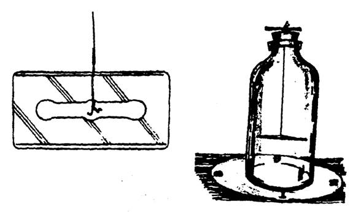